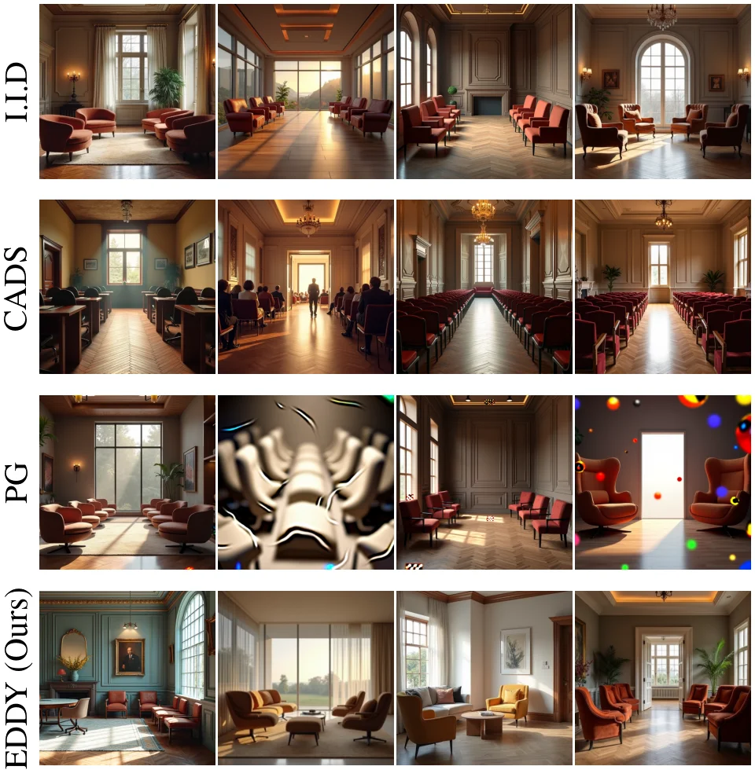

I.I.D (top): Low diversity among samples. CADS (upper-middle): High-quality samples but with low prompt adherence (people in the second sample). PG (lower-middle): Increased variety with visible artifacts. EDDY (bottom): Diverse output that preserves photorealism and prompt fidelity.
Abstract
We present EDDY (Exact-marginal Diversification via Divergence-free dYnamics), a guidance mechanism for diffusion and flow matching models that promotes diversity among samples generated while maintaining quality. EDDY exploits symmetries of the Fokker-Planck equation, using drift perturbations that change particle trajectories while preserving the evolving marginal distribution. We instantiate this principle through kernel-based anti-symmetric pairwise matrix fields, constructed from the repulsive directions. The resulting divergence-free dynamics promote diversity at the joint particle level while preserving each particle's marginal distribution without any additional training. As computing the guidance can be computationally expensive in cases such as text-to-image generation with perceptual embeddings, we propose practical approximations as an effective and efficient solution. Experiments on synthetic distributions and text-to-image generation show that EDDY improves diversity while maintaining strong distributional fidelity compared to common baselines.
EDDY's Building Block
Let \(k(x,y)\) be a similarity kernel (e.g. RBF). Naively, driving particles away from \(x_{\mathrm{star}}\) can be achieved using the negative kernel gradient:
Unfortunately, this distorts the marginal distribution. Instead, EDDY constructs an anti-symmetric matrix field using direction \( v_\textrm{star} \) and applies Stein's operator, producing a vortex-like (eddy-like) motion that preserves the marginal exactly:
Show the math
Naive repulsion uses the negative kernel gradient as a repulsive direction \(r := -\nabla_x k(x,\,x_{\mathrm{star}})\).
EDDY instead builds an anti-symmetric matrix from repulsive vector \(r\) and an arbitrary transport vector \(v_\textrm{star}\): \[ A \;:=\; r \otimes v_\textrm{star} \;-\; v_\textrm{star} \otimes r, \] and applies Stein's operator with respect to the underlying distribution \(p\): \[ \mathcal{A}_p(A) :\;=\; A\,\nabla\log p(x_{\mathrm{star}}) \;+\; \operatorname{div} A. \] Interestingly, \(\text{div}\,A\) is the divergence-free kernel \[ \bigl(\nabla^2_x k(x,x_\textrm{star}) \;-\; \Delta_x k(x,x_\textrm{star}) \bigr) \; v_\textrm{star}, \] which dominates \(\mathcal{A}_p(A)\) as the dimension grows.
EDDY Promotes Diversity
When the direction \(v_1,\ldots,v_n\) is chosen as the velocity each particle \(x_1,\ldots,x_n\) follows in a diffusion or flow matching process, EDDY's building block naturally promotes diversity — steering particles toward different modes without altering any particle's marginal distribution:
EDDY in Text-to-Image Generation
EDDY applied to FLUX.1‑dev and Stable Diffusion XL on COCO captions. Each panel shows four generated variants for the same prompt and random seed — I.I.D samples independently while EDDY steers all four particles apart without changing any individual marginal distribution.
BibTeX
@article{vinograd2026eddy,
title = {Diverse Sampling in Diffusion Models with Marginal Preserving Particle Guidance},
author = {Vinograd, Gal and Achituve, Idan and Fetaya, Ethan},
journal = {arXiv preprint arXiv:2605.06553},
year = {2026}
}